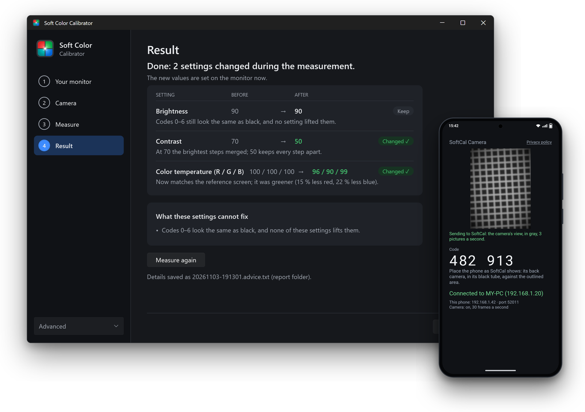
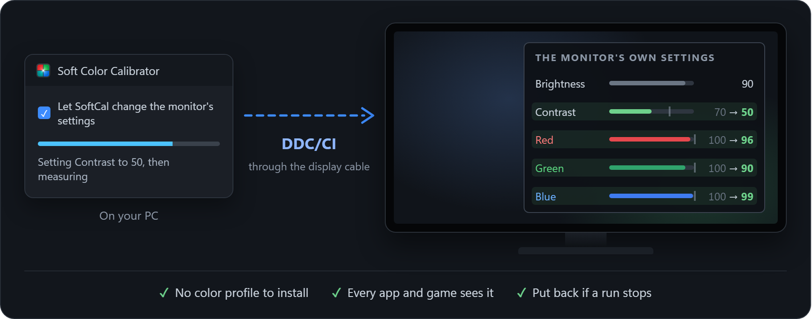
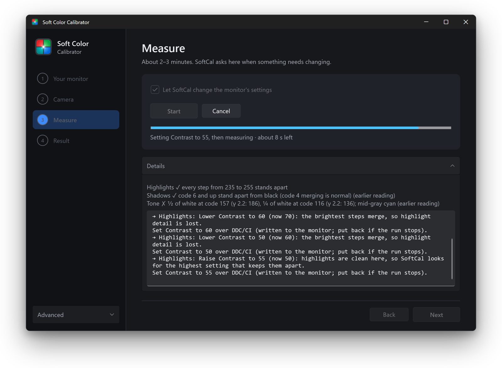
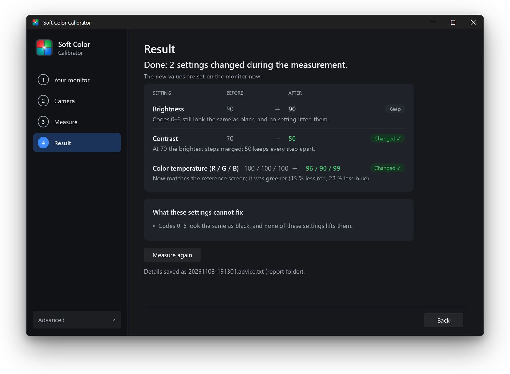
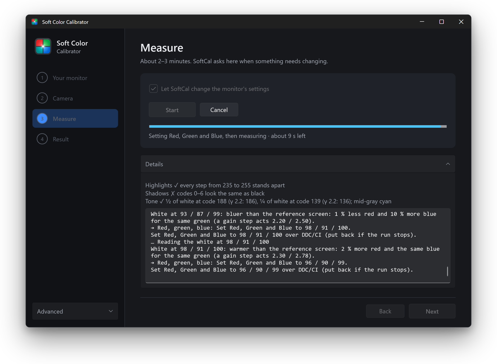
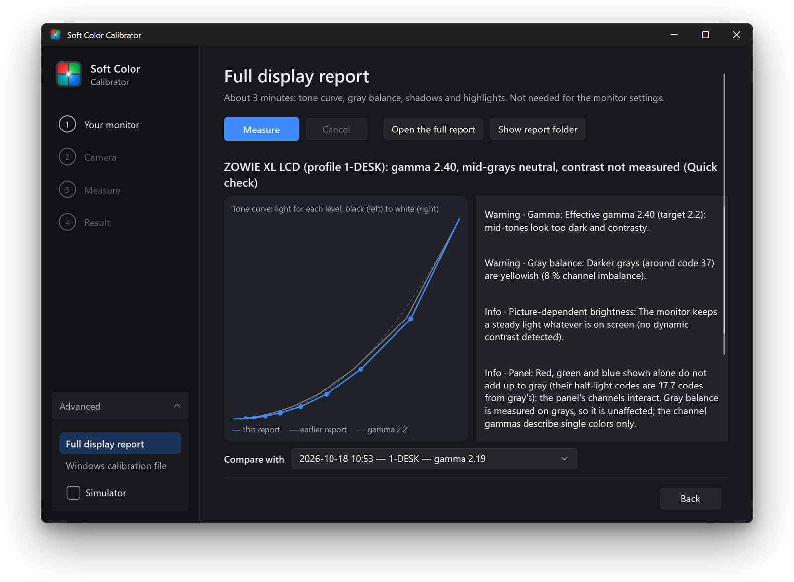
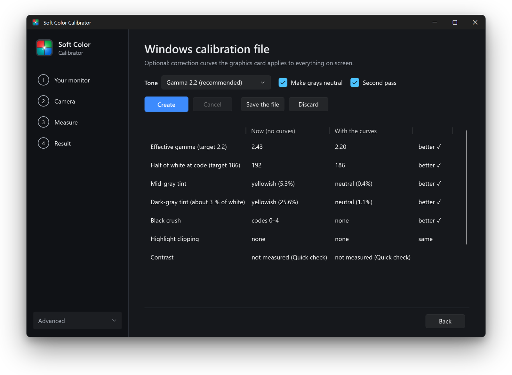
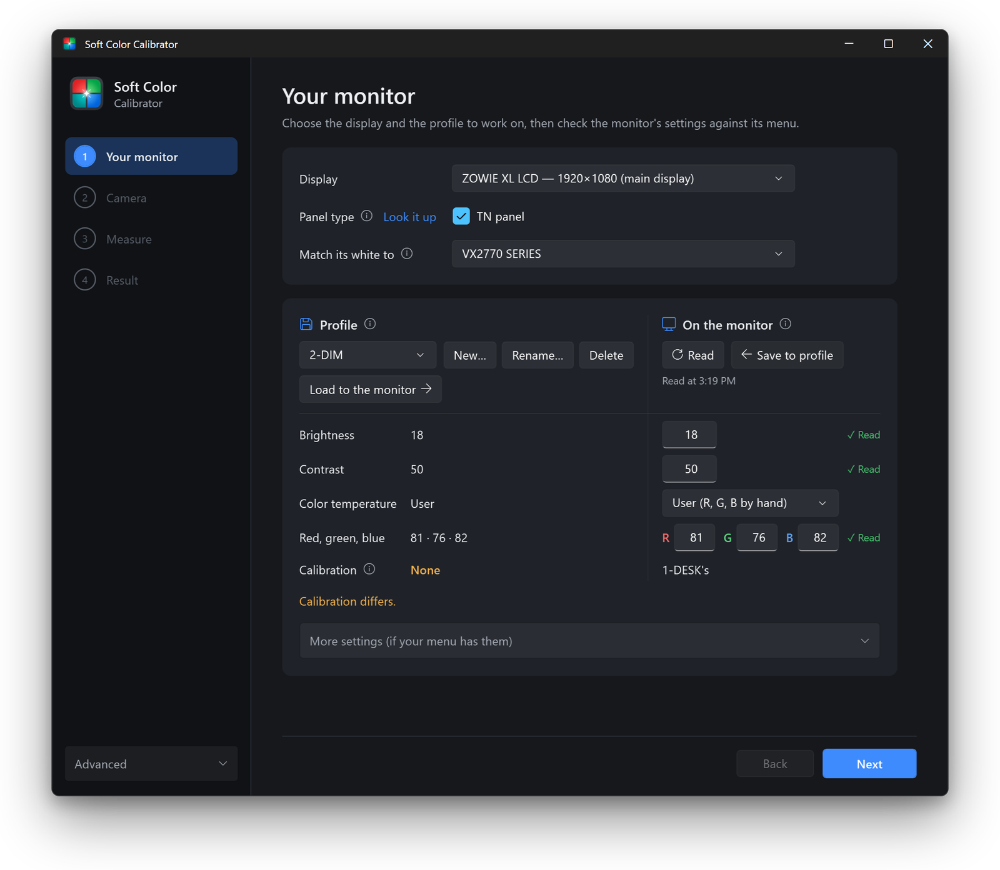
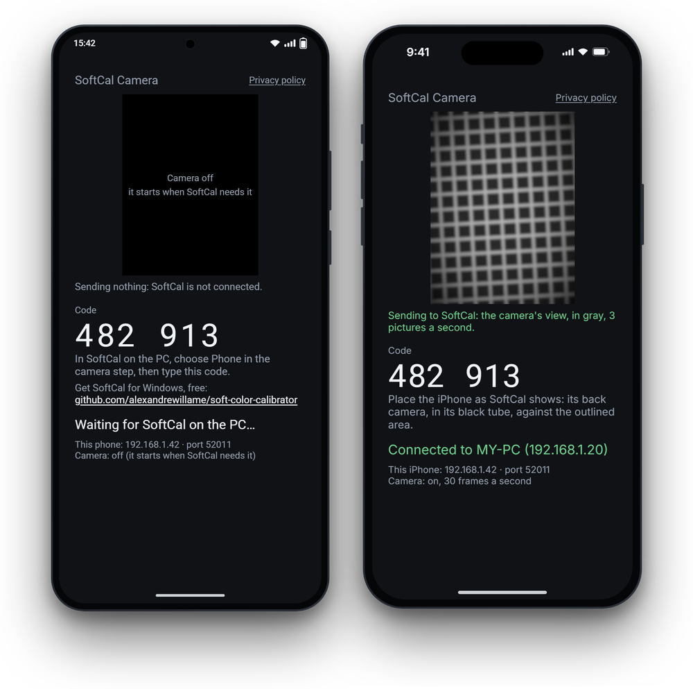

Calibrate your monitor with a camera you already own
Soft Color Calibrator measures your monitor through a USB webcam or your phone (Android, iPhone or iPad), then changes the monitor's own brightness, contrast and colors directly from the app, over DDC/CI: no color profile needed. It also matches its white to another screen. Free and open source.
An early version: feedback is welcome.

It sets your monitor directly
SoftCal changes the monitor's own brightness, contrast and red, green, blue over DDC/CI, the control channel in your display cable, as the monitor's buttons would. The correction lives in the monitor: no color profile or graphics-card curves to keep loaded, so every app and game sees it. Each value is measured again after it is set, and everything SoftCal sets is put back if a run stops. A monitor without DDC/CI gets each value to set in its menu instead.

Why a camera works
A camera is not a colorimeter: its colors and tone curve are its own. So SoftCal never asks it what it sees, only which of two things is brighter. It shows a fine pattern of black and white lines whose light is known, then grays, one after the other, and finds the gray the camera cannot tell from the lines. That holds whatever the camera's curve, white balance or processing. Per color channel, the same comparison finds the gray balance; one camera looking at two screens tells whether their whites match. Repeated runs agree to about a tenth of a code value.
What it does
One measurement of about 2 to 3 minutes, then clear answers.
Sets your monitor directly
Brightness, contrast and red, green, blue changed in the monitor itself, over DDC/CI, one change at a time, each checked by measuring. No color profile needed; without DDC/CI, each value for its menu.
White matching
Makes your monitor's white match another screen on the same PC, setting red, green and blue until two screens side by side look the same.
Windows calibration file
Optional, for what the monitor's settings cannot fix: creates, tries and installs an ICC profile with calibration curves, and keeps them loaded after sleep and sign-in.
Display report
Tone curve and gamma, gray balance at every level, crushed blacks, clipped whites, contrast, and before and after comparisons.
Profiles
Different settings for day, night or games, loaded back onto the monitor over DDC/CI with one button. Every overwrite shows what will change first.
Safe by design
Everything SoftCal changes (graphics card curves, camera, monitor values, HDR) is recorded and put back, even if the app crashes.
How it works
Four steps, guided on screen.
Your monitor
Choose the monitor to measure, and the screen whose white it should match.
Camera
Rest the camera on the screen in a short black paper tube. A level shows when it is straight.
Measure
SoftCal shows patches and compares them, and sets each value on the monitor itself, or asks you to in its menu.
Result
Before and after values for every setting, each with the reason, already set on the monitor.
See it
The report and the monitor page are from a real monitor; the other screens are from SoftCal's built-in simulator (Advanced › Simulator), which lets you try it without a camera, setting its demo monitor over DDC/CI included.






SoftCal Camera: your phone as the instrument
No webcam? Install SoftCal Camera on an Android phone or tablet (Android 9 or later), or an iPhone or iPad (iOS 16 or later), on the same Wi-Fi as your PC. SoftCal finds it by itself; type the 6-digit code it shows and you are connected. On Android, it measures from the camera's raw sensor data when the phone offers it, before any of the phone's own processing.

What you need
- Windows 11 (22H2 or later), and a second screen while measuring.
- A camera: a USB webcam that lets apps set its exposure, or a phone or tablet (Android, iPhone, iPad) with SoftCal Camera.
- A short tube of black paper around the camera, and a stack of books to hold it against the screen.
- DDC/CI on the monitor, so SoftCal can set its values itself: most external monitors have it, some need it turned on in their menu. Without it, SoftCal gives each value for the menu.
Extract the zip to a folder where it will stay, then run SoftColorCalibrator.exe. If Windows says it protected your PC, click More info, then Run anyway.
Private by design
No account, no ads, no telemetry. Your measurements stay on your PC, and the phone talks only to your PC, on your local network. Read the privacy policy.